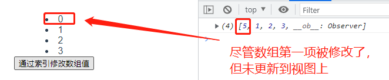
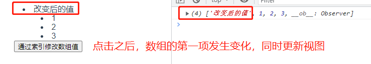

上文提到
Object.defineProperty无法监测数组变化，那么 Vue 是如何解决该问题？
1. 原理
由 Vue2监测数据变化原理 这篇文章可知，Object.defineProperty 有两个缺陷：
- 无法监测对象属性的新增和删除
- 无法监测数组数据变化
2. 示例代码
也就是说，直接通过索引值修改数组的数据，Vue 无法监测到数组的变化，因为没有对应的 set 和 get 方法。如下：
<template>
<div>
<li v-for="(item, index) of list" :key="index">{{ item }}</li>
<button @click="changeList">通过索引修改数组值</button>
</div>
</template>
<script>
export default {
data() {
return {
list: [0, 1, 2, 3]
}
},
methods: {
change() {
// 通过索引直接修改数组值的，无法被更新到视图上
this.list[0] = 5
}
}
}
</script>
- 1
- 2
- 3
- 4
- 5
- 6
- 7
- 8
- 9
- 10
- 11
- 12
- 13
- 14
- 15
- 16
- 17
- 18
- 19
- 20
- 21
- 22

3. 解决方法
1）方法一：使用 Vue.set API（在组件中，使用 this.$set）进行修改
this.$set(要修改的数组，要修改的索引值，改变后的值)
change() {
this.$set(this.list, 0, 改变后的值)
}
- 1
- 2
- 3
2）方法二：Vue 对数组常见的 7个操作方法进行了重新包装，保证在数组操作前能监听到数组变化。包括以下七种：
- push：从数组尾部插入
- pop：从数组尾部移除
- unshift：从数组头部插入
- shift：从数组头部移除
- splice：替换
- sort：排序
- reverse：颠倒顺序
将第2点中的示例代码，改造成如下（方法1或方法2任选一种）：
// 方法1
change() {
this.$set(this.list, 0, '改变后的值')
}
// 方法2
change() {
// 能监听到 hobby 的变化
this.list.splice(0, 1, '改变后的值')
}
- 1
- 2
- 3
- 4
- 5
- 6
- 7
- 8
- 9
- 10

4. 总结
- Vue2 中，
Object.defineProperty无法监测数组的变化 - 因此，Vue2 对7个常见的数组操作方法进行了包装，通过这7种方法操作的数组，都可以被 Vue 监测到


 1233
1233


 被折叠的 0 条评论
为什么被折叠?
被折叠的 0 条评论
为什么被折叠?
 到【灌水乐园】发言
到【灌水乐园】发言